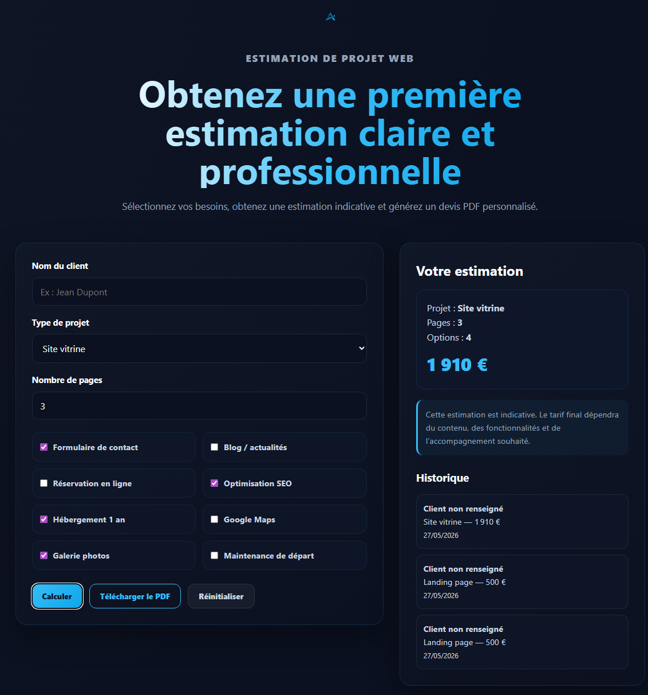

Sites vitrines modernes
Création de sites vitrines clairs, modernes et responsives pour présenter votre activité, vos services et vos informations essentielles de manière professionnelle.
Création web • Outils interactifs • Accompagnement humain
Création de sites web modernes et d’outils interactifs pour indépendants, créatifs et petites entreprises.
J’accompagne indépendants, créatifs et petites structures dans la création de sites web modernes et de solutions interactives claires, utiles et professionnelles.
Des sites web modernes et des outils interactifs simples, pensés pour aider les indépendants, artisans et petites structures à présenter leur activité, gagner du temps et inspirer confiance.
Création de sites vitrines clairs, modernes et responsives pour présenter votre activité, vos services et vos informations essentielles de manière professionnelle.
Amélioration ou refonte de sites existants pour moderniser l’image, clarifier le contenu et offrir une navigation plus agréable aux visiteurs.
Accompagnement dans les étapes essentielles : nom de domaine, hébergement, email professionnel, publication du site et premiers réglages techniques.
Création de petits outils web personnalisés : calculateurs, formulaires intelligents, devis interactifs ou solutions simples pour automatiser certaines tâches.
Technologies et compétences que j’utilise progressivement dans la création de sites web modernes, responsives et interactifs.
Structure sémantique, accessibilité et organisation des pages web.
Responsive design, animations, mise en page moderne et effets visuels.
Interactions dynamiques, FAQ, menu burger, outils interactifs et logique front-end.
Versionning, branches, sauvegarde de projets et déploiement GitHub Pages.
Adaptation des interfaces pour mobile, tablette et ordinateur.
Optimisation progressive du référencement, des performances et de l’expérience utilisateur.
Je développe progressivement des outils web interactifs pensés pour répondre à des besoins concrets : automatisation simple, génération de documents, gestion d’informations et solutions utiles pour indépendants ou petites structures.
Outil de suivi pour animaux permettant de gérer les informations importantes : vaccinations, vermifuges, rappels, identification et suivi simplifié.
Création automatisée de devis, fiches ou documents simples directement depuis une interface web moderne et responsive.
Projet SaaS éducatif destiné aux enfants du primaire avec exercices interactifs, logique ludique et apprentissage gamifié.
Découvrez quelques réalisations mêlant sites web modernes, outils interactifs et solutions concrètes pensées pour répondre à des besoins réels.

Outil interactif conçu pour estimer un projet web selon plusieurs critères : type de site, nombre de pages, options personnalisées, historique local et génération automatique d’un devis PDF.

Site vitrine pour un restaurant italien fictif, conçu comme un projet complet avec plusieurs pages, formulaires, carte Google Maps et animations JavaScript.

Site vitrine métier pour une chatterie spécialisée dans le Sacré de Birmanie, conçu pour présenter l’élevage, rassurer les futurs adoptants et faciliter les demandes de contact.

Portfolio personnel conçu pour présenter mon parcours, mes réalisations et mon positionnement autour des sites web modernes, des outils interactifs et des solutions concrètes.
Arnaud Adam
Je suis Arnaud Adam, créateur de sites web modernes et d’outils interactifs, basé en Belgique.
Après plusieurs années dans différents métiers de terrain et de production, j’ai choisi de me reconvertir dans le développement web avec une approche progressive, concrète et orientée solutions.
Mon parcours professionnel m’a appris la rigueur, l’adaptation, l’autonomie et l’importance du travail bien fait — des qualités que j’applique aujourd’hui dans la création de projets web modernes et accessibles.
J’aime particulièrement développer des outils interactifs utiles : calculateurs, systèmes de réservation, générateurs PDF ou petites solutions digitales adaptées aux besoins réels des indépendants et petites structures.
Ce portfolio reflète mon évolution, ma curiosité, ma motivation et ma volonté de construire des solutions web modernes, utiles et humaines.
Quelques réponses aux questions les plus courantes concernant mes services, les outils interactifs et la création de sites web.
Je crée principalement des sites vitrines modernes, portfolios, pages de présentation et outils interactifs pour indépendants, créatifs et petites entreprises.
Oui. Je développe également des outils web interactifs simples : calculateurs, systèmes de réservation, générateurs PDF ou solutions adaptées à des besoins spécifiques.
Non. Le calculateur donne une estimation indicative afin d’aider à mieux visualiser le budget d’un projet web avant discussion plus détaillée.
Non. Je peux également collaborer à distance avec des clients situés au Luxembourg, en France ou dans d’autres régions francophones.
Oui. Tous les projets sont conçus avec une approche responsive afin d’offrir une expérience agréable sur ordinateur, tablette et smartphone.
Vous avez un projet de site web, besoin d’un outil interactif ou simplement envie d’échanger sur une idée digitale ? Contactez-moi via le formulaire ci-dessous ou directement par email.